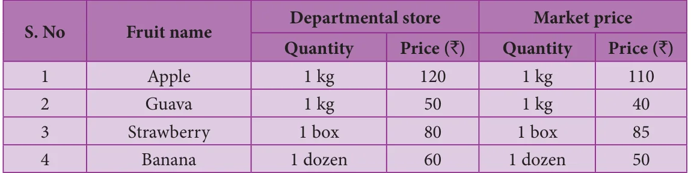
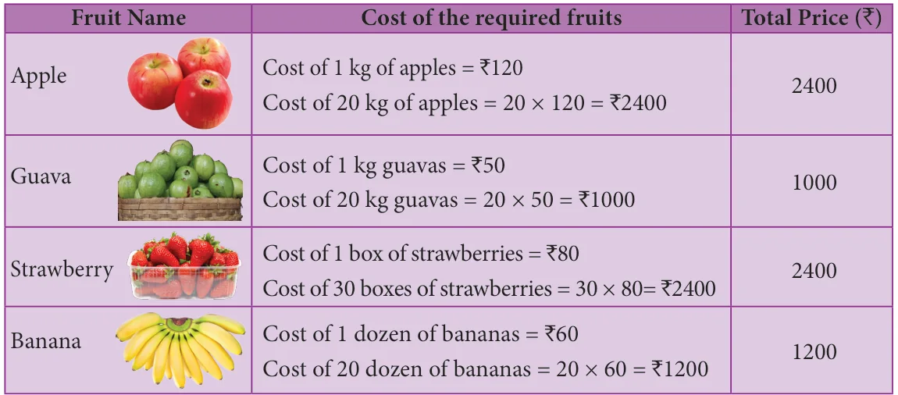
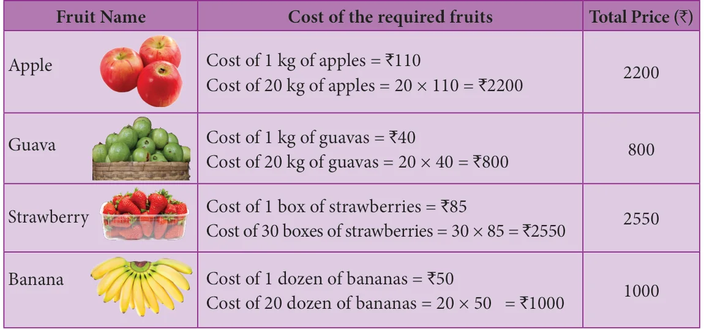
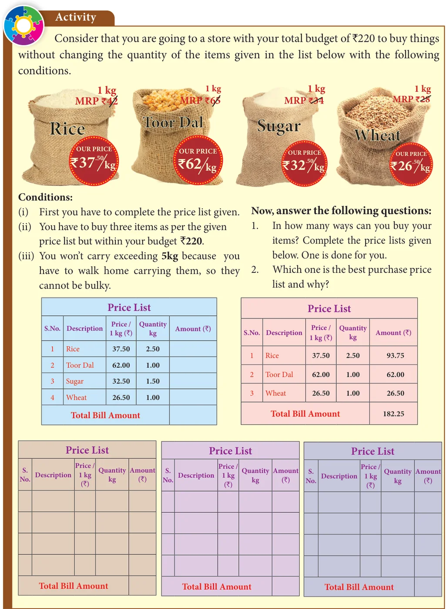

<!DOCTYPE html>
<html lang="en">
<head>
<meta charset="UTF-8">
<meta name="viewport" content="width=device-width,initial-scale=1">
<title>7.8 Shopping Comparison — Information Processing</title>
<meta name="description" content="Class 8 Mathematics · Information Processing · 7.8 Shopping Comparison">
<link rel="icon" href="data:image/svg+xml,<svg xmlns='http://www.w3.org/2000/svg' viewBox='0 0 100 100'><text y='.9em' font-size='90'>📘</text></svg>">
<link rel="stylesheet" href="../../../assets/book.css">
<link rel="stylesheet" href="https://cdn.jsdelivr.net/npm/katex@0.16.11/dist/katex.min.css" crossorigin="anonymous">
</head>
<body>
<header class="topbar">
<div class="topbar-in">
  <div class="crumb">
    <span class="c1"><a href="../../../index.html">Library</a> · <a href="../../index.html">Class 8 Mathematics</a></span>
    <span class="c2">Information Processing · 7.8 Shopping Comparison</span>
  </div>
  <a class="tb-btn" data-nav="prev" href="../../07-information-processing/11-exercise-7.3/index.html" title="Exercise 7.3">←</a>
  <details class="drawer"><summary class="tb-btn" title="Sections in this chapter">☰</summary>
<div class="drawer-panel"><div class="dh">Information Processing</div><a href="../01-chapter-opener/index.html">Chapter opener</a><a href="../02-introduction-7.1/index.html">7.1 Introduction</a><a href="../03-principles-of-counting-7.2/index.html">7.2 Principles of Counting</a><a href="../04-set-game-7.3/index.html">7.3 SET - Game</a><a href="../05-map-colouring-7.4/index.html">7.4 Map Colouring</a><a href="../06-exercise-7.1/index.html">Exercise 7.1</a><a href="../07-fibonacci-numbers-7.5/index.html">7.5 Fibonacci Numbers</a><a href="../08-highest-common-factor-7.6/index.html">7.6 Highest Common Factor</a><a href="../09-exercise-7.2/index.html">Exercise 7.2</a><a href="../10-cryptology-7.7/index.html">7.7 Cryptology</a><a href="../11-exercise-7.3/index.html">Exercise 7.3</a><a href="../12-shopping-comparison-7.8/index.html" aria-current="page">7.8 Shopping Comparison</a><a href="../13-packing-7.9/index.html">7.9 Packing</a><a href="../14-exercise-7.4/index.html">Exercise 7.4</a></div></details>
  <a class="tb-btn" data-nav="next" href="../../07-information-processing/13-packing-7.9/index.html" title="7.9 Packing">→</a>
  <button class="tb-btn" data-theme-toggle title="Toggle light / dark" aria-label="Toggle light or dark theme">◐</button>
</div>
<div class="progress"><span style="width:96.3%"></span></div>
</header>
<main class="wrap">
<div class="sec-head">
  <p class="eyebrow"><a href="../index.html">Chapter 7 · Information Processing</a></p>
  <h1>7.8 Shopping Comparison</h1>
  <p class="sec-meta">Textbook pages 31–36 · 9 figures</p>
</div>
<article class="prose">
<p>Students, I hope you all have an experience in shopping. can you share a few of your experiences? I would like to raise some questions on your shopping experience. How will you shop the things you need? By (i) attractive colour or (ii) best price or (iii) big in size or (iv) on seeing. Whatever it may be, among all these things, one important point should be noted. What is that? Yes, that is the expiry date. Have you ever noticed the expiry date on all the packed goods? It is very important to see that and another way of shopping is to compare goods by means of its price, quality, quantity, offers, discount and other considerable things. Before spending your money to shop any item from a market or a departmental store, consider the best prices, the best quality and other reliable things. This is what we call as wise shopping. Here, we will learn how to be a wise consumer before shopping a product from the following situation.</p>
<h4 class="callout-h" id="s-situation">Situation:</h4>
<p>Imagine that the teacher makes you and your friend to be incharge of the fruit section of your school canteen for a week. She also instructs the following steps and she can help you when needed. Now you have to buy fruits for 2 days as per your the shopping list. One of you should go to the market and the other should go to the departmental store to know the cost of the fruits before shopping. Estimate yourselves about which place will give you the best deal. After that, Check your shopping list to see how much fruits you require. Compare the weight and price for each item from both places. Select the best deal for all items in only one place. Discuss and compare the price list so that you decide where to buy the required list of fruits. For example, the collected model price list from both shops is given in the table below:</p>
<figure class="fig side-fig"></figure>
<figure class="fig table-fig wide"></figure>
<p>Now, we will calculate the total price of the required and quantity of fruits from both the departmental store and market.</p>
<p>Calculating the total price from the Departmental store:</p>
<figure class="fig table-fig wide"></figure>
<p>Calculating the total price from the Market Price:</p>
<figure class="fig table-fig wide"></figure>
<p>Now, let us compare the shopping price of the Departmental store to that of the Market shop.</p>
<figure class="fig table-fig wide"></figure>
<p>From the above comparison, we find that shopping made at the Market shop is the best deal quantity wise as well as in price wise and hence it is wise to shop in the Market.</p>
<figure class="fig table-fig wide"></figure>
<h3 id="s-7-8-1-comparing-containers-of-different-size">7.8.1 Comparing containers of different size</h3>
<p>Many times, items are packed in different sized containers. Sometimes, shoppers save money by selecting a larger container of the same item. For  example, 1 litre of milk often costs less than 5 units of 200ml pack of milk. Sometimes, a store has two prices for the same item. One price is for buying a single item,  while the other price is for buying more than one of the same item. For example, groundnut oil may cost `135 for 1 litre bottle and `240 for 2 litre bottles. In this case, if you buy two 1 litre bottles, you will pay more. Sometimes, buying in quantity also saves money. Sometimes, the consumer may not be able to use up the larger size of an item before it  becomes stale or outdated. To find out which size container is the best to buy, you will need</p>
<figure class="fig table-fig wide"></figure>
<h4 class="callout-h" id="s-try-these">Try these</h4>
<p>The teacher divides the class into four groups and sets up a mock market in the class room and ask the students to involve in role play as two groups of businessmen and two groups of consumers. Consumers have to buy products at different shops and prepare a price list.</p>
<p>The two supermarkets in which the two groups can buy are Star Food Mart and Super Provisions. This week they each have got a special deal on some products. At Star Food Mart, you can buy items at discount prices. At Super Provisions, there are some “BUY ONE GET ONE” deals. Have a look at their deal:</p>
<h2 id="s-star-food-mart">Star Food Mart</h2>
<p>Chocolate Biscuits Peanut candies Protein milk Badam nuts</p>
<p>worth `114 per packet worth `90 now worth `60 now worth `450 now at `30 off at `20 off at `20 off at `150 off</p>
<h2 id="s-super-provisions">Super Provisions</h2>
<p>Chocolate Biscuits Peanut candies Protein milk Badam nuts</p>
<p>worth `180 per packet worth `150 worth `80 worth `580</p>
<p>Buy one get one free Buy one get one free Buy one get one free Buy one get one free</p>
<p>Now, answer the following questions.</p>
<h3 id="s-i-here-is-your-shopping-list">I. Here is your shopping list:</h3>
<ul class="qlist">
<li><span class="mk">(i)</span><span class="lt">4 bottles of Protein Milk (200 ml size) (ii) 2 packets of Peanut candies(200 gm)</span></li>
<li><span class="mk">(iii)</span><span class="lt">1 packet of Chocolate biscuits (iv) 1 packet of Badam nuts (500 gm)</span></li>
<li><span class="mk">(i)</span><span class="lt">If you buy all the items in one shop, where will you get the best price?</span></li>
<li><span class="mk">(ii)</span><span class="lt">If you buy the items from the two shops, how will you do it to spend the least</span></li>
</ul>
<p>amount of money?</p>
<p>II. You have `1000/- to spend to buy the following shopping list:</p>
<ul class="qlist">
<li><span class="mk">(i)</span><span class="lt">6 bottles of Protein Milk (200 ml size) (ii) 3 packets of Peanut candies(200 gm)</span></li>
<li><span class="mk">(iii)</span><span class="lt">3 packets of Chocolate biscuits (iv) 1 packet of Badam nuts (250 gm).</span></li>
<li><span class="mk">(i)</span><span class="lt">How can you do this so that you don’t go over your budget amount `1000?</span></li>
<li><span class="mk">(ii)</span><span class="lt">Which shop offers you the best value for money on each item?</span></li>
<li><span class="mk">(iii)</span><span class="lt">Is the “BUY ONE GET ONE” deal at Super Provisions the same as “50% off” deal?</span></li>
</ul>
</article>
<nav class="pager"><a class="" data-nav="prev" href="../../07-information-processing/11-exercise-7.3/index.html"><span class="dir">← Previous</span><span class="t">Exercise 7.3</span><span class="ch">Information Processing</span></a><a class="nx" data-nav="next" href="../../07-information-processing/13-packing-7.9/index.html"><span class="dir">Next →</span><span class="t">7.9 Packing</span><span class="ch">Information Processing</span></a></nav>
</main><footer class="site">Generated from the source textbook PDFs · text, figures and exercises belong to their respective publishers.</footer><script defer src="https://cdn.jsdelivr.net/npm/katex@0.16.11/dist/katex.min.js" crossorigin="anonymous"></script>
<script defer src="https://cdn.jsdelivr.net/npm/katex@0.16.11/dist/contrib/auto-render.min.js" crossorigin="anonymous"
  onload="renderMathInElement(document.body,{delimiters:[
    {left:'\\(',right:'\\)',display:false},
    {left:'$$',right:'$$',display:true},
    {left:'\\[',right:'\\]',display:true}],throwOnError:false,ignoredTags:['script','noscript','style','textarea','pre','code']})"></script>
<script src="../../../assets/book.js"></script>
<script defer src="../../../../assets/search.js?v=1789782769"></script>
<script defer src="../../../../assets/screenshot.js?v=1789782769"></script>
</body>
</html>
